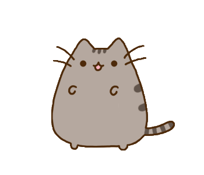

고양이(학명: Felis Catus, 영어: Cat)는 식육목 고양이과에 속하는 포유류다. 들고양이(영어: Wild Cat)는 약 10만 년에서 7만년 전부터 존재했다. 길들여진 고양이의 기원은 약 1만년 전 중동 지역에서 스스로 숲속을 나와 사람들이 모여사는 마을에 정착하여 길들여진 아프리카들고양이로 추측된다.
고양이는 인류로 부터 오랫동안 반려동물로 사랑받아 왔다. 실례로 고대 이집트의 벽화에는 고양이를 새 사냥에 이용하는 그림이 있다. 고양이와 인간의 공생관계는 농경의 발달로 이집트 문명이 발생했을 무렵 곡식을 저장하는 창고에 모여든 쥐를 따라온 것이 시작으로 알려져 있다. 때문에 고양이는 길들여진 동물인 가축의 특성을 전혀 지니고 있지 않으며, 가축이라기보다는 인간과 공생관계라고 보는 것이 맞다.
애완견과는 달리 옛 습성이 살아 있으며, 발톱을 숨길 수 있어서 쥐, 새, 벌레 등을 사냥할 수 있다.